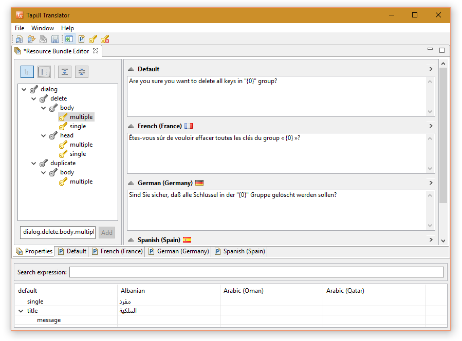
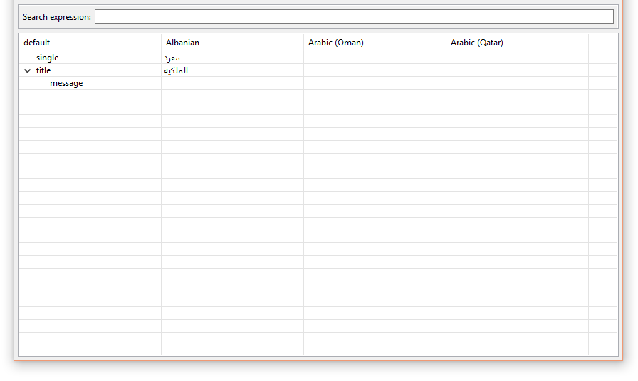

TapiJI
TapiJI represents a set of smart tools that integrate into the Eclipse IDE for Java developers with the goal to reduce effort of Internationalization. This is accomplished by creating a productive environment for building multilingual applications.
Platforms & Features
Standalone Translator (RCP)
The TapiJI Translator represents a stand-alone application for translating program resources. It supports RCP (Rich Client Platform) as target platform and allows to open and edit resource files without any file format conversion. Moreover, professional translators are assisted by additional tools.Translator Workbench |
|
| Designed to make translation easier, faster and accurate as possible. The workbench is available for developers and professional translators. With a set of tools like glossary it is possible to get consistent translations accross all projects and speed up translation. The workbench shows if a translation is missing and different tools helps to maintain the term definitions. Furthermore it ensures typographical quality with the use of curly quotes, convert characters to unicode, syntax highlight and much more. |  |
| Glossary | |
|  | Translators can manage their own glossary or contribute to a project glossary. Terms are presented on the glossary view where they can maintain jargon-like terms and phrases for different languages. Terms can be grouped, deleted, added and modified. |
Currently supported property files
- Java property files
Release notes
Pre-Release 1.0.0-SNAPSHOT [not for production]Changelog file: Latest Changelog